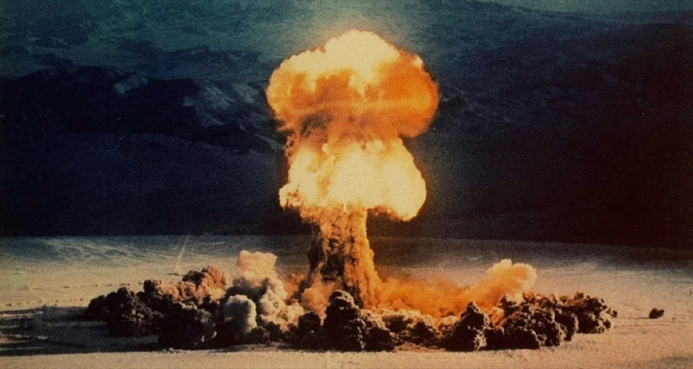

Nükleer Tehdit
Acayipleşti havalar, bir güneş, bir yağmur, bir kar. Atom bombası denemelerinden diyorlar. Stronsium 90 yağıyormuş ota, süte, ete, umuda, hürriyete, kapısını çaldığımız büyük hasrete. Kendi kendimizle yarışmadayız,…
 Oğul Tuna
Oğul Tuna8 Kasım 2026 · 2 dk okuma

Acayipleşti havalar,
bir güneş, bir yağmur, bir kar.
Atom bombası denemelerinden diyorlar.
Stronsium 90 yağıyormuş
ota, süte, ete,
umuda, hürriyete,
kapısını çaldığımız büyük hasrete.
Kendi kendimizle yarışmadayız, gülüm.
Ya ölü yıldızlara hayatı götüreceğiz,
ya dünyamıza inecek ölüm.
Türk şiirinin en büyük ismi Nâzım, 1958 yılında Varşova’da kaleme almış “Stronsiyum 90” adlı bu şiirini.
Dünyamıza ölüm indirmek isteyenlerin birbirleriyle yarıştıkları, Evanjelist-Siyonist fanatiklerin “kıyameti öne çekmeye” çalıştıkları ve küresel kapitalizmin bu kanlı ittifakla iş tuttuğu bir dönemeçteyiz.
Nâzım’ı geçenlerde yine aklıma getiren, bu kısa ama vurucu şiiri dimağıma tekrar tekrar vuran Japonca bir X gönderisi oldu. Hiroşima’yı yâd ederek İran’ı nükleer silahla vurma tehdidinde bulunan Trump ve ABD’ye sesleniyordu bu kişi.
Ne acı!
İnsanlığın tarihî beşiklerinden, uygarlığın temellerinden biri olan bir bölge ve orada yaşayan, akrabamız ama her şeyden evvel “insan” olan yüz milyona yakın kişiye aylardır yaşatılan kâbusa böylece bir yenisi eklendi.
Tucker Carlson’ın sosyal medyada ifşa ettiği, Beyaz Saray’ın İran’a dair “delice” bir planı olduğunu söyledikten üç gün sonra şüpheli şekilde felç geçiren ABD’li Senatör Chris Murphy’nin işaret verdiği sona yaklaşıyoruz.
Carlson’a göre Netanyahu’nun baskısı altında Trump yönetimi, İran’a çok kısa süre içerisinde nükleer saldırı düzenleyebilir. İster Çehov’un ünlü sözüne ister bendenizin 22 Haziran’da yaptığı gibi Márquez’in Kırmızı Pazartesi’sine gönderme yapalım; tarihî bir an’a, milyonların hayatını ilgilendiren bir noktaya yaklaştığımız açık.
Nitekim “33” devletin paylaşımları fırtınanın ulaştığını gösteriyor: İngiltere hane başına 9 litre içme suyu ve 3 günlük yiyecek stoklamaya çağırırken Fransa en az 72 saatlik malzeme bulundurmayı öneriyor. İsveç, halkına “kriz veya savaş” hâlinde en az bir hafta kendi başlarına ayakta kalabileceklerini söylüyor; Mısır ise altı aylık temel gıda rezervi sağladığını açıklıyor.
Ukrayna Savaşı’ndan sonra Putin ve Medvedev’in veya Lavrov gibi daha soğukkanlı isimlerin “nükleer” kelimesini telaffuz etmeleriyle dünyayı ayağa kaldıran Batı yine Trump ve Netanyahu rejimlerine karşı sessiz. O Trump ki aylar önce koca bir medeniyeti bir gecede yerle bir edebileceğini söylemiş, kimseden tek bir tepki görmemişti.
Ama yine de umudu elden bırakmamak; İsrail-ABD koalisyonunun vuracaklarını ilan ettiği adreslerde toplanarak kitlesel şekilde katillere meydan okuyan ve bugün çektikleri videolarla bunları alaya alan İranlıların cesaretini paylaşmak gerek.
Çünkü yine Nâzım’ın dediği gibi:
Büyük insanlığın toprağında gölge yok
sokağında fener
penceresinde cam
ama umudu var büyük insanlığın
umutsuz yaşanmıyor.
Oğul Tuna tarihçi, çevirmen ve uluslararası ilişkiler uzmanıdır. Avrasya’nın tarihî ve güncel meselelerine, siyasal düşünceye ve entelektüel tarihe odaklanmaktadır.
Yazarın tüm yazıları →